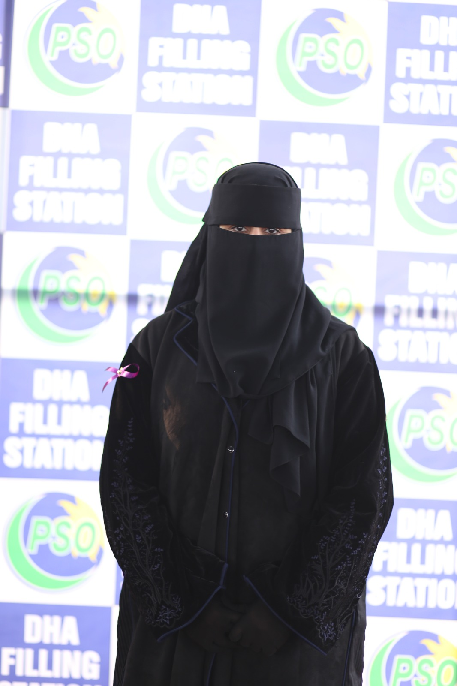

WELCOME TO MY PORTFOLIO
Exploring technology, programming, mathematics and database management. Learning, building and growing towards a career in software development.
Explore My Work
I am a BS Mathematics student with a growing interest in software development, programming and technology. My academic background helps me develop analytical, logical and problem-solving skills.
I am exploring Python programming, SQL databases, software development and practical technology projects. My goal is to turn ideas into useful digital solutions and continue developing my technical abilities.
Learning Python fundamentals, programming logic and problem-solving.
Working with SQL, database concepts, tables and data management.
Exploring website development and building practical software solutions.
Studying mathematical concepts, abstract algebra and logical reasoning.
A DBMS project focused on restaurant operations, customer management, table reservations, menu management and inventory tracking.
SQL / DBMSAn academic mathematics project exploring algebraic concepts, structures and logical problem-solving.
MathematicsPractising programming fundamentals and developing logical thinking through Python exercises.
PythonMy own professional portfolio website, created to present my academic background, technical interests, skills and projects.
HTML / CSSUndergraduate Student
Developing knowledge in mathematics, abstract algebra, classical mechanics and computer-related subjects.
Thank you for visiting my portfolio.
I am always interested in learning, collaboration and new opportunities.
Let's connect and grow together!